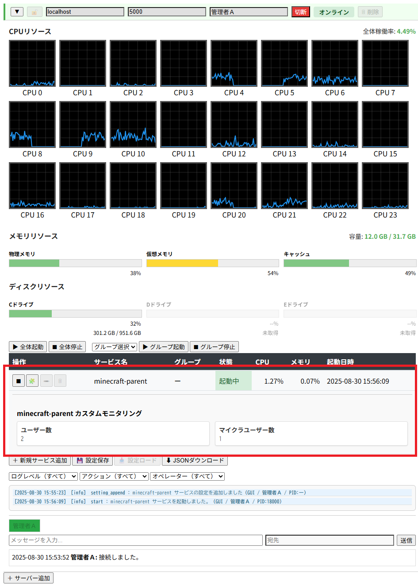

【実装例（UDP 通信）】
はじめに
SOCKET-MANAGER Framework の新機能「シンプルソケット機能」は、TCP/UDP 通信をシンプルに扱える仕組みを提供します。
本記事では、SOCKET-MANAGER Launcher の カスタムモニタリング機能 に組み込まれている UDP 通信タイプの実装例を紹介します。
マインクラフトサーバー環境で「ユーザー数」や「マイクラユーザー数」をリアルタイムに可視化する仕組みを例に、シンプルソケットの活用方法を解説します。
本記事では、SOCKET-MANAGER Launcher の カスタムモニタリング機能 に組み込まれている UDP 通信タイプの実装例を紹介します。
マインクラフトサーバー環境で「ユーザー数」や「マイクラユーザー数」をリアルタイムに可視化する仕組みを例に、シンプルソケットの活用方法を解説します。
カスタムモニタリングの概要
SOCKET-MANAGER Launcher の GUI には「カスタムモニタリング機能」が搭載されています。
この機能を利用すると、サービスごとに独自のデータを画面上に表示することが可能です。
例えば、マインクラフトサーバー環境では「ブラウザユーザー数」や「マインクラフトユーザー数」といった利用状況をリアルタイムに可視化できます。
また、開発中サービスのデバッグ用途として、任意の数値や状態を送信して表示させることもできます。
このカスタムモニタリング機能は UDP 通信タイプ（
詳しい内容は ▶カスタムモニタリング機能 を参照してください。
この機能を利用すると、サービスごとに独自のデータを画面上に表示することが可能です。
例えば、マインクラフトサーバー環境では「ブラウザユーザー数」や「マインクラフトユーザー数」といった利用状況をリアルタイムに可視化できます。
また、開発中サービスのデバッグ用途として、任意の数値や状態を送信して表示させることもできます。
このカスタムモニタリング機能は UDP 通信タイプ（
SimpleSocketTypeEnum::UDP） のシンプルソケット機能を利用しています。詳しい内容は ▶カスタムモニタリング機能 を参照してください。
デモ環境の準備
SOCKET-MANAGER Framework のデモ環境には、カスタムモニタリング機能を利用した UDP 通信の実装例が含まれています。
インストールは以下のコマンドで行えます。
インストール後、
デモ環境の詳しいインストール手順については、▶フレームワークのご紹介のページをご覧ください。
インストールは以下のコマンドで行えます。
> composer create-project socket-manager/demo-project <インストール先ディレクトリ>
インストール後、
app/MainClass/ChatServerForMinecraft.php にソースコードが実装されています。デモ環境の詳しいインストール手順については、▶フレームワークのご紹介のページをご覧ください。
実装例（UDP通信）
デモ環境では、
この例では、接続ユーザー数とマインクラフトユーザー数を集計し、UDPで送信しています。
SimpleSocketGenerator::setKeepRunning にクロージャを渡して UDP 通信を行います。
$generator->setKeepRunning(function(?ISimpleSocketUdp $p_simple_socket, ParameterForMinecraft $p_param)
{
$cids = $p_param->getConnectionIdAll();
$all_cnt = count($cids);
$minecraft_cnt = 0;
foreach($cids as $cid)
{
if($p_param->isMinecraft($cid))
{
$minecraft_cnt++;
}
}
$send_data =
[
[
'service' => 'minecraft-parent',
'type' => 'user-cnt',
'data' => $all_cnt
],
[
'service' => 'minecraft-parent',
'type' => 'minecraft-cnt',
'data' => $minecraft_cnt
]
];
$serialize_data = json_encode($send_data);
$w_ret = $p_simple_socket->sendto('localhost', 15000, $serialize_data);
if($w_ret === null || $w_ret === false)
{
return;
}
}, $param);
この例では、接続ユーザー数とマインクラフトユーザー数を集計し、UDPで送信しています。
JSONフォーマットの構造
送信されるデータは JSON 形式で定義されます。
- service：サービス名
- type：データタイプ名
- data：数値や文字列データ
$send_data =
[
[
'service' => 'minecraft-parent',
'type' => 'user-cnt',
'data' => $all_cnt
],
[
'service' => 'minecraft-parent',
'type' => 'minecraft-cnt',
'data' => $minecraft_cnt
]
];
ランチャー側の準備
カスタムモニタリングを表示するためには、Launcher 側の設定が必要です。
インストールは以下のコマンドで行います。
インストール後、
コメントアウトを外すことで、GUIランチャー画面の対象サービス行直下に、カスタムモニタリング項目が表示されます。

カスタムモニタリング表示のGUI画面
ランチャーの詳しい操作方法については、▶DevOps環境のページをご覧ください。
インストールは以下のコマンドで行います。
> composer create-project socket-manager/launcher <インストール先ディレクトリ>
インストール後、
app/client/operator_config.js にデモ環境との連携サンプルがコメントとして記載されています。
const operator_config = [
// デモ環境のマインクラフト版チャットサーバーとの連携サンプル
// {
// host: "localhost",
// port: 5000,
// service: "minecraft-parent",
// type: "user-cnt",
// label: "ユーザー数"
// },
// {
// host: "localhost",
// port: 5000,
// service: "minecraft-parent",
// type: "minecraft-cnt",
// label: "マイクラユーザー数"
// }
];
コメントアウトを外すことで、GUIランチャー画面の対象サービス行直下に、カスタムモニタリング項目が表示されます。
動作確認
設定を反映した後、GUIランチャーを起動し、ブラウザで
デモ版のサービスを起動すると、カスタムモニタリング項目が画面上に表示され、リアルタイムに更新されます。
app/client/launcher.html を開きます。デモ版のサービスを起動すると、カスタムモニタリング項目が画面上に表示され、リアルタイムに更新されます。
おわりに
- カスタムモニタリング機能は、サービスごとの独自データを GUI 上に表示できる便利な仕組み
- UDP 通信タイプのシンプルソケットを利用し、JSON フォーマットで複数項目を送信可能
- デモ環境と Launcher を組み合わせることで、すぐに動作確認できる